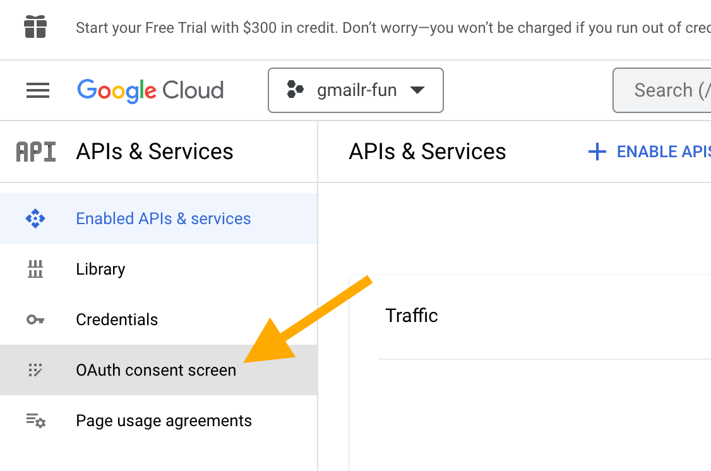
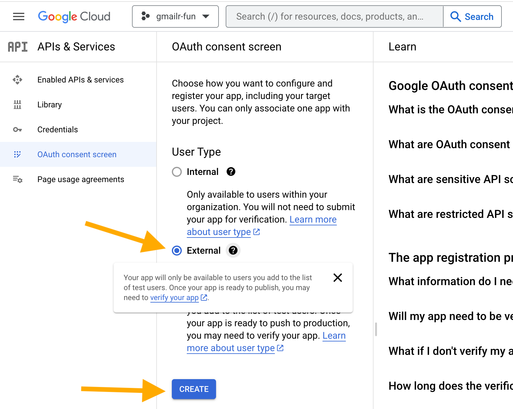
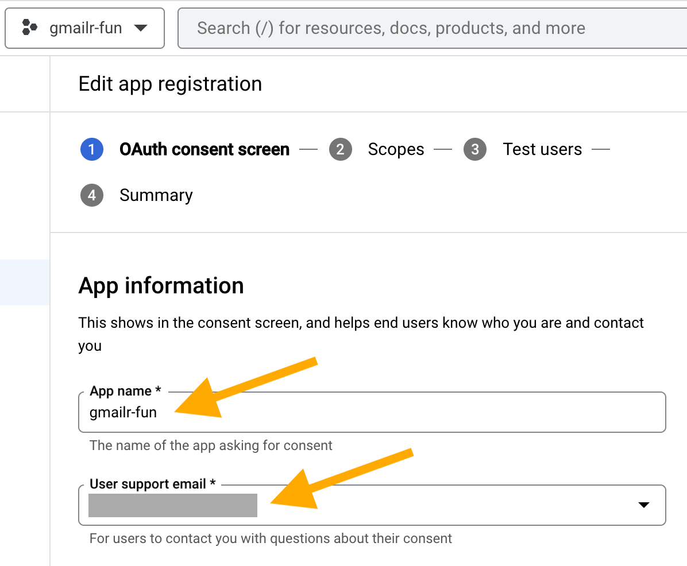
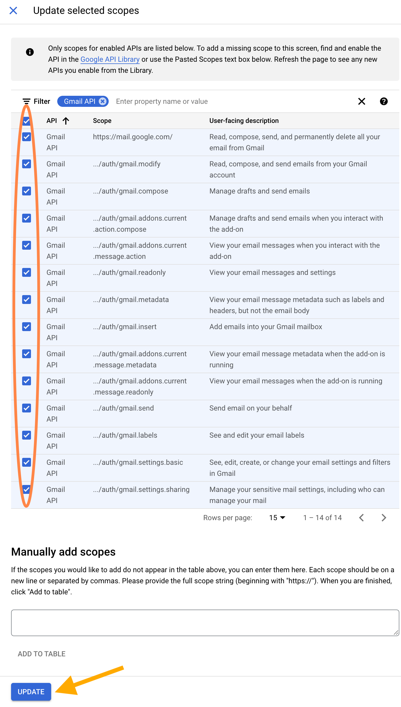
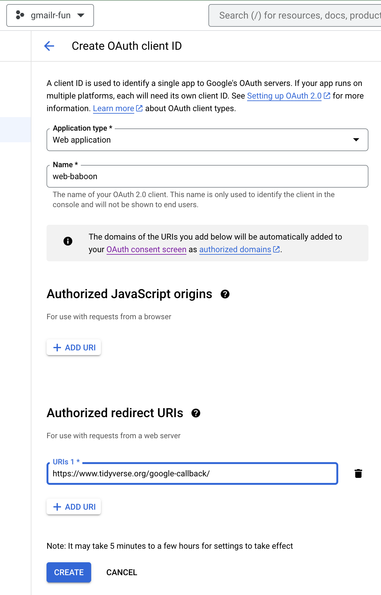

This article explains how to create your own OAuth client and how to configure it for use with gmailr.
This article contains many screenshots, by necessity. However, there are many downsides to a screenshot-heavy article and the reader needs to be ready to adapt to certain issues:
- These webpages are outside of the control of gmailr and change over time.
- These webpages can look different depending on:
- The type of Google account you are using, i.e. an individual versus a user within a Google workspace organization, such as a company or university.
- Your previous use of Google Cloud.
- Probably other factors!
The bottom line is that the screenshots you see here may not exactly match what you see. We offer this assistance on a “best effort” basis, but you may need to be a bit resourceful and resilient. There may be differences between the screenshots here and what you see.
Overview
This is a multi-step process and it’s easy to get lost in the weeds, so here is an overview. I include some detail here, so that someone who’s done this before might be able to work from just this checklist:
- Sign in to Google Cloud console https://console.cloud.google.com/.
- Create a Google Cloud project. And/or select the target project.
- Enable the Gmail API for the project.
- Configure the OAuth consent screen for the project (or, using
Google’s vocabulary, for your “app”):
- Specify the user type, i.e. external vs. internal. An individual Google user, operating outside of Google Workspace, must choose external. Inside an organization, it is possible to choose internal and that is a good idea.
- Select the allowed scopes. Below I recommend a few nonsensitive default scopes, plus the Gmail-related scopes.
- List the allowed users. This applies to a project with external user type and “Testing” publishing status (as opposed to “In production”).
- Create an OAuth client and download a JSON representation of it.
- Here you must choose between the “Desktop app” or “Web” client type. We cover how to make this decision below.
- Tell gmailr about your OAuth client.
- Put the downloaded JSON in the place where gmailr can discover it or
provide the filepath via an environment variable or provide it directly
in
gm_auth_configure(path =).
- Put the downloaded JSON in the place where gmailr can discover it or
provide the filepath via an environment variable or provide it directly
in
Sign in to Google Cloud console
I focus on the user who has never used Google Cloud before and who is authenticating as an individual (versus as a user within an organization). The rationale is that these are the users who will benefit the most from this detailed documentation. I may eventually create documentation focused on a different type of user, but, in the meantime, hopefully other types of users can also gain something from this article.
Go to the Google Cloud console and sign in:
https://console.cloud.google.com/

Since this is your first usage of Google Cloud, you need to agree to their Terms of Service.

At this point, you might see an offer to start a free trial of Google Cloud Platform, but that is not necessary in order to create an OAuth client. You might be interested in the free trial if you want to experiment with Google Cloud services that normally cost money, such as BigQuery or Maps. You can activate the free trial, now, later, or never; it has nothing to do with your ability to create an OAuth client that works with gmailr.
Create a Google Cloud project
Next we need to select a project. Locate and click the “Select a project” button.

Since you are a new user, presumably you don’t have any existing projects. Click “NEW PROJECT” in the upper right corner. It is fine to see “No organization” here; that’s expected if the Google account you’re using exists outside of Google Workspace.

Now you are on the “New Project” screen.

I strongly recommend that you do not accept the automatically generated project name. Instead I recommend that you give the project some meaningful (or at least memorable) label that reminds you of its purpose and use that for both the project name and project ID. When you are happy with the project name and ID, click the “CREATE” button. In this example, we are using “gmailr-fun” as the project name (and ID).
Now you should see that you are working within your intended target project.

Enable the Gmail API for the project
Now we configure APIs & Services for this project. There are various ways to get to this screen, depending on where you start and the type of Google account. Hopefully you can find your way to something like this:

Click on “APIs & Services” and then on “Enabled APIs & services”. Don’t be surprised if some APIs are already enabled, even in a new project; this happens by default. If this page reveals that the Gmail API is already enabled, you can move on (that won’t be true in a new project, but could be true for an existing project). Here’s how this screen might look for a new project:

Click on “+ ENABLE APIS AND SERVICES”. In the next screen, search for the Gmail API and select it. You will get to a screen like this:

Click “ENABLE”.
Configure the OAuth consent screen
This step may feel unexpected, because you may not be very sure what the “OAuth consent screen” even is. It can help to connect your goals with how Google frames this task. Google’s vocabulary in this step frequently refers to your application or your app. You can basically think of your Google Cloud project as what Google means by your app or application. And that project/app basically refers to “the work I plan to do with the Gmail API from R”.
It’s time to go to “OAuth consent screen”, which is one of the pages you can access from APIs & Services. Click on “OAuth consent screen”.

It is quite difficult to have an OAuth “app” that works for just anyone. There is an onerous registration and verification process. The tidyverse team has done this for the Drive, Sheets, and BigQuery APIs, which makes auth easier for casual R use with the googledrive, googlesheets4, and bigrquery packages. But it is essentially impossible to do the same for a project that has the Gmail API enabled. This is why gmailr users have to create their own OAuth client. Users of googledrive, googlesheets4, and bigrquery packages may elect to use their own OAuth client, obtained with the same process described here, except with different APIs enabled for the project.
Since you and your project are not part of a Google Workspace, you must choose the “External” user type. This may seem weird, but since you are not part of an organization, there is no such thing as an internal user. Select the “External” user type, then click “CREATE”.

(This article focuses on the solo user who is in not part of Google Workspace, but the process has substantial overlap with creating an OAuth client for use within an Google Workspace organization. In that context, the “Internal” user type should be available and is probably the best choice.)
Now we edit the “App information”. For “App name”, a good default is to use the same label you used as the project name and project ID, e.g. “gmailr-fun”. A good default for “User support email” is whatever Google email address you are logged in with.

You can leave “App logo” and “App domain” unconfigured. For the “Developer contact information”, a good default is whatever Google email address you are logged in with, which we also used for the “User support email”. All of this setup and terminology makes more sense for those who really are creating an application for multiple users. It’s weird for the solo user, but it is what it is.

Click “SAVE AND CONTINUE”.
Now we add scopes. Click “ADD OR REMOVE SCOPES”.

First, select these (nonsensitive) scopes:
".../auth/userinfo.email"".../auth/userinfo.profile""openid"
This makes it easier to tell which user is associated with an OAuth
token downstream. In particular, the gargle package always adds the
".../auth/userinfo.email" scope when obtaining user tokens,
so you definitely want that enabled here.

Then, use the “Filter” feature to find the scopes associated with the
Gmail API. You may want to adjust “Rows per page” to a number high
enough to fit all the Gmail scopes on one page (at the time of writing,
there are 14). By default, I recommend selecting all Gmail scopes, for
ease of downstream use. You can always request a token with narrower
scope with a call like gm_auth(scopes = "gmail.readonly").
But if you don’t select a scope here, that scope will never be available
to you in gm_auth(). If you have a specific reason to be
conservative and you know you only plan to do “read only” work, then you
can be extra careful and only enable specific scopes here. When you’re
done selecting scopes, click “UPDATE”.

When you are returned to the “Edit app registration” screen, things look quite different, thanks to all the scopes you added. It will look something like this:

Scroll down to the bottom and click “SAVE AND CONTINUE”.

Now we will add a test user: YOU! Click on “+ ADD USERS”.
(If you are creating an OAuth client within a Google Workspace and it is only for internal users, you can skip the steps around adding test users. This is only relevant to a client that supports external users and that has “Testing” publishing status.)

Enter your email address and click “ADD”.

When you are returned to the “Edit app registration” screen, things look different, thanks to the test user you added. It will look something like this:

Click “SAVE AND CONTINUE”. Now you arrive at a “Summary” screen, that summarizes what you’ve entered for “OAuth consent screen”, “Scopes”, and “Test users”.
Create an OAuth client
Now we go to the “Credentials” section of “APIs & Services”. You can get there in various ways, depending on where you start.


Here’s how this screen will look for a new user and new project, i.e. where there are no credentials yet.

Here’s how this screen might look in a project that has existed for a long time, that has many existing credentials of various types.

Now we create a new OAuth client. Click on “+ CREATE CREDENTIALS”.

Select “OAuth client ID”.

Next you must choose “Application type”.

Here’s how to choose the application type:
-
Desktop app: use this if you’re going to use gmailr on your local computer. More technically, this is appropriate for any setting where the httpuv R package will be able to spin up a local web server (gargle does this behind the scenes for you).
The “Desktop app” client type can also be used in a hosted/cloud context, under very specific circumstances. The GCP project’s OAuth consent screen must be configured for internal users within a Google workspace or for external users in “Testing” mode. This is associated with a conventional or legacy out-of-bound (oob) auth flow.
Web application: use this if you’re going to use gmailr in some sort of hosted or cloud context, such as RStudio Server, Posit Workbench, Posit Cloud, or Google Colaboratory, with a GCP project whose OAuth consent screen is configured for external users with “In production” publishing status. This is the client type needed for a gargle-specific variant of oob known as pseudo-oob.
Note that above, we are talking about the computing environment where
you will do the OAuth dance, i.e. where you will obtain new tokens. If
you are going to do auth on your local computer, then deploy that token
to Posit Connect or Cloud or shinyapps.io, you can still use a “Desktop
app”. (This workflow is detailed in
vignette("deploy-a-token").)
Let’s say you choose “Desktop app”. (In a later section, we address the “Web application” type.) Again, you’ll get a chance to give the client a name. I encourage you to give it a label that has some meaning and that you can hold in your head for minutes at a time. In this example, I use the name “desktop-aardvark”. I incorporate “desktop” to remind myself which type of client this is and “aardvark” is just a random animal. If I need to add another client later (maybe of “Web application” type), I might call that one “web-baboon”. You get the idea.

You should see the happy news that your OAuth client was created:

We want to “DOWNLOAD JSON”, but rest assured that, as it says: “The client ID and secret can always be accessed from Credentials in APIs & Services” (including as downloadable JSON). This is not one of those screens where you need to panic because you can never access this information again.
Click “DOWNLOAD JSON” and a .json file will be
downloaded to wherever your browser is configured to put such things.
The filename will look like this (but longer and more random):
client_secret_8675309-nobody4overcome4nuanced.apps.googleusercontent.comIf you’re still looking at the “OAuth client created” pop-up, click “OK”. Now the “Credentials” screen within “APIs & Services” will look more like this:

You should see your successfully created OAuth client ID, with the name you gave it.
If you ever need to access to this JSON again, come back to the “Credentials” screen. Each existing OAuth client ID has a download button.

Tell gmailr about your OAuth client
gm_auth_configure() is the function we use to tell
gmailr about this OAuth client. It is best to provide the filepath of
the downloaded JSON to the path argument:
There are a couple of ways this can work. You can provide an actual
path in your R code. This makes sense in some settings. But
most users should take advantage of the default value of
path, which calls
gm_default_oauth_client().
gm_default_oauth_client() knows to look for the JSON in
a few specific locations or environment variables. Unless you have a
reason to do otherwise, you might as well arrange for the OAuth client
JSON to be discovered by gm_default_oauth_client(). In
order of preference:
-
Move the downloaded JSON file to the location returned by
rappdirs::user_data_dir("gmailr"). You could accomplish this move with code like this:path_old <- "~/Downloads/client_secret_123-abc.apps.googleusercontent.com.json" d <- fs::dir_create(rappdirs::user_data_dir("gmailr"), recurse = TRUE) fs::file_move(path_old, d)It’s important that the target folder only has one file whose name “looks” like a Google OAuth client file.
-
Place the downloaded JSON file in some other location (perhaps this is out of your control). Inform gmailr by recording this filepath in the
GMAILR_OAUTH_CLIENTenvironment variable. In your.Renviron, you would have something like this:GMAILR_OAUTH_CLIENT=/path/to/my/gmailr/oauth-client.json
If you’ve successfully made your OAuth client automatically
discoverable, you should be able to call
gm_auth_configure() with no arguments, like this, and then
immediately use gm_oauth_client() to confirm that a client
has been configured:
library(gmailr)
gm_auth_configure()
gm_oauth_client()
#> <gargle_oauth_client>
#> name: ...
#> id: ...
#> secret: <REDACTED>
#> type: installed
#> redirect_uris: ...Then you should be able to “just use” gmailr, with or without an
explicit call to gm_auth().
Note that you will see some slightly scary screens when using your own personal OAuth client as one of the test users. Once you do anything that triggers gmailr auth, you’ll see this:

Once you click “Continue”, you’ll need to say exactly what permissions you are willing to grant:
![Screenshot that reads: 'gmailr-fun wants access to your Google Account'. Then it shows the email 'jenny.f.bryan@gmail.com'. Next the text 'Select what gmailr-fun can access'. The choice 'Associate you with your personal info on Google' is preselected and greyed out, indicating this choice cannot be altered. The choice 'See your primary Google Account email address' is preselected and greyed out, indicating this choice cannot be altered. The choice 'Read, compose, send, and permanently delete all your email from Gmail' has been checked. This is emphasized with an orange oval. Then there is text: 'Make sure you trust gmailr-fun. You may be sharing sensitive info with this site or app. You can always see or remove access in your Google Account. There is an arrow pointing at the 'Continue' button at the bottom of the page.](img/select-what-app-can-access.png)
The pre-checked items reflect those nonsensitive scopes mentioned
earlier. But you still need to explicitly check the box for “Read,
compose, send, and permanently delete all your email from Gmail”. Note
that the exact wording and permissions of this last item may vary, if
you specify non-default scopes in your
gm_auth() call. Click “Continue” to obtain a user token
and, hopefully, live out your gmailr-powered dreams of controlling Gmail
from R.
At this point, your GCP project is in “Testing” mode. That has the potential downside that refresh tokens only last for 1 week, i.e. the credential can be refreshed automatically for only 1 week. After that, the refresh token becomes invalid, and you’ll have to re-do the OAuth dance. There are two ways to get a token that is more persistent:
- Switch the publishing status, in your OAuth consent screen settings, from “Testing” to “In production”. That is explained in the next section.
- Use a GCP project that is within a Google workspace and configure the OAuth consent screen for the “Internal” user type. This is obviously only available to folks working within a Google workspace and that either describes you or it doesn’t.
Use a non-verified, “In production” app
This section discusses the experience if your GCP project is not inside a Google workspace, but you have decided to change its publishing status from “Testing” to “In production”. The reason you might do this is to get a token that remains valid for more than 1 week. This can be done in the OAuth consent screen configuration. Click the “PUBLISH APP” button.

You will then see a new pop-up asking you to confirm this choice, outlining various implications and requirements.

Presumably you have no intention of doing any of these things, since this OAuth client is for personal use. Regardless, click “CONFIRM” to proceed.
Now the OAuth consent screen settings reflect the new publishing status, which is “In production”. However, you will also see that your project “Needs verification”. You will just have to accept this situation as something awkward that comes when an individual R user is forced to use API configuration that is really designed for application developers.

You should be able to make personal use of the OAuth client now, despite the fact that it “Needs verification”. Your GCP project and OAuth client(s) can exist in this state as long as the usage is extremely low, in terms of the number of unique users, which presumably will be 1 or some other very small number. You can learn more about exceptions to the verification requirements in the Google OAuth API verification FAQ.
When you do the OAuth dance, you will again see some scary screens, due to the “Needs verification” flag on the project.

When you are first informed that “Google hasn’t verified this app”, click “Advanced” to proceed. You will get a slightly different scary screen, advising you to continue only if you understand the risks and trust the developer, i.e. yourself. Click “Go to YOUR-PROJECT-NAME (unsafe)” to proceed to the usual consent screens.

Create an OAuth client of “Web application” type
This section adds a few details about creating an OAuth client of “Web application” type, as opposed to “Desktop app” type. You will do this if you’re going to obtain tokens, i.e. go through the OAuth dance, when both of these are true:
- R is running in a web browser. Examples include RStudio Server, Posit Workbench, Posit Cloud, or Google Colaboratory.
- The OAuth consent screen for the GCP project that owns the OAuth client specifies the “External” user type and has publishing status “In production” (as opposed to “Testing”). This is associated with a gargle-specific variant of the “out-of-bound” (oob) auth flow known as pseudo-oob.
The oob auth flows are described in the gargle article Auth when using R from the browser.
Let’s pick up the instruction above at the point where you are choosing an “Application type”. This time we choose “Web application”.
You’ll get a chance to give the client a name. I encourage you to give it a label that has some meaning and that you can hold in your head for minutes at a time. In this example, I use the name “web-baboon”. I incorporate “web” to remind myself which type of client this is and “baboon” is just a random animal.

You can leave “Authorized JavaScript origins” unconfigured.
However, for the pseudo-oob flow, you must configure
a URI in the “Authorized redirect URIs” section. This should be a web
page capable of handling a successful response from Google’s
authorization server. The page should take that response and expose a
code that the user can copy and paste back into R. The gargle package
then processes that input and extracts an authorization code needed to
complete the auth process. Tidyverse packages use
https://www.tidyverse.org/google-callback/ for this
purpose. If you want to host your own page, a suitable HTML file ships
with the gargle package at
system.file("pseudo-oob/google-callback/index.html", package = "gargle").
In that case, you should configure its associated URL as an “Authorized
redirect URI”.
From this point on, everything about downloading the JSON and configuring the OAuth client is the same as before.